应用页面
Frontend微服务应用前端已正常部署，可通过浏览器访问并进行商品浏览、购物车与下单流程测试。
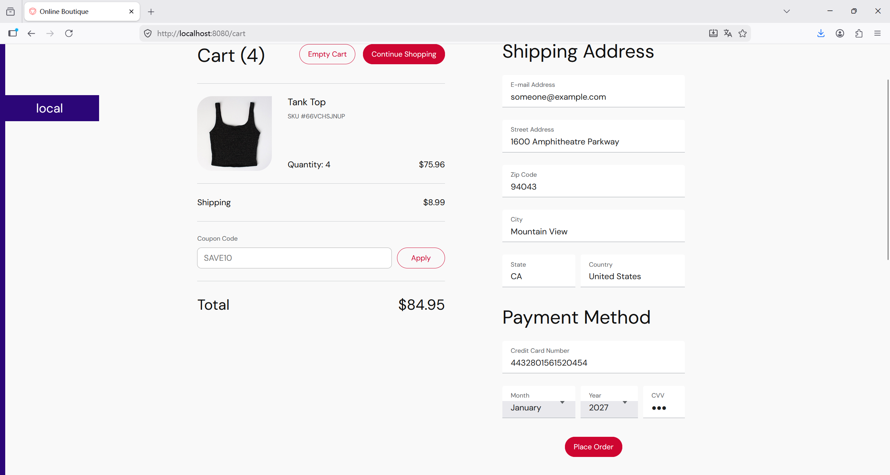
Selenium 功能测试
Functional- 使用 Selenium 编写自动化脚本，模拟用户在前端界面上的操作，如浏览商品、下单等。
- 配置 Selenium 脚本进行页面加载测试、按钮点击、表单提交等交互，确保前端功能正常。
- 在不同的浏览器中运行测试脚本，验证系统在不同环境下的兼容性。
- 记录页面加载时间、交互响应时间等指标，模拟实际用户操作场景。
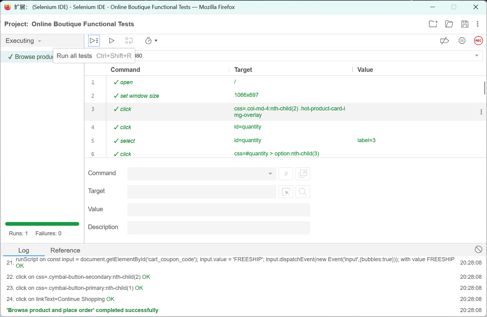
导出脚本：
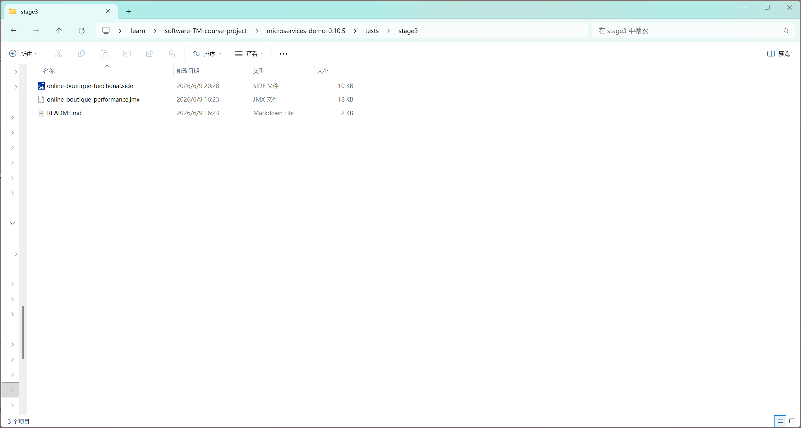
JMeter 白盒测试
Performance编写相关配置和脚本，模拟 HTTP 请求访问首页、商品页、购物车和结算流程。
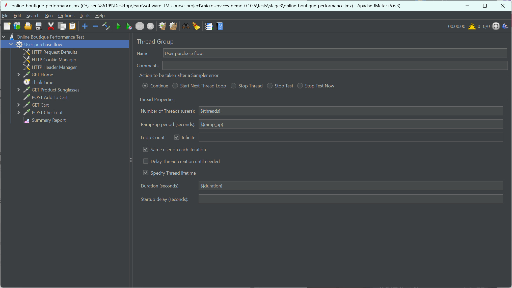
断言问题修正
Debug初次运行时 GET Cart 请求出现 100% 错误率。经检查 Response Code 为 200，错误来源为 JMeter Response Assertion 文本匹配失败，而非系统接口异常。调整断言条件后重新测试。
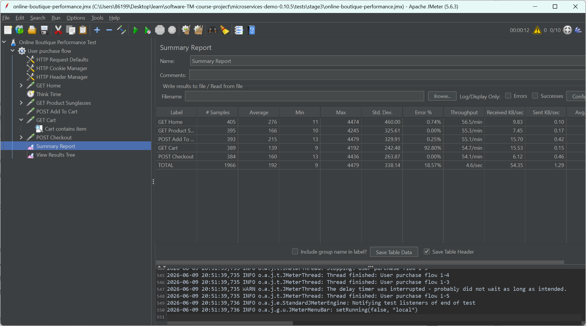
命令行测试与 HTML 报告
CLI使用命令行第一次测试，测试配置如下：
host = localhost
port = 8080
threads = 10
ramp_up = 10
duration = 120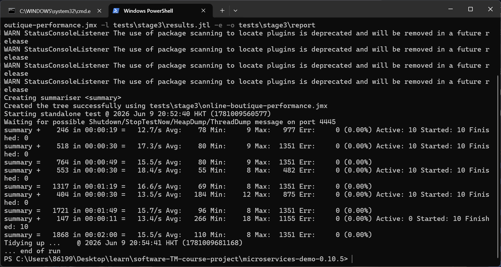
查看 HTML 报告：
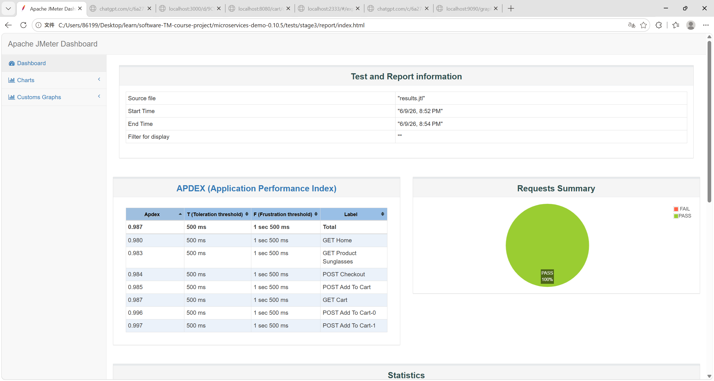
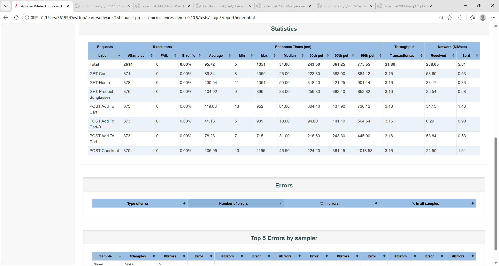
期间 Grafana Dashboard 的波动图：
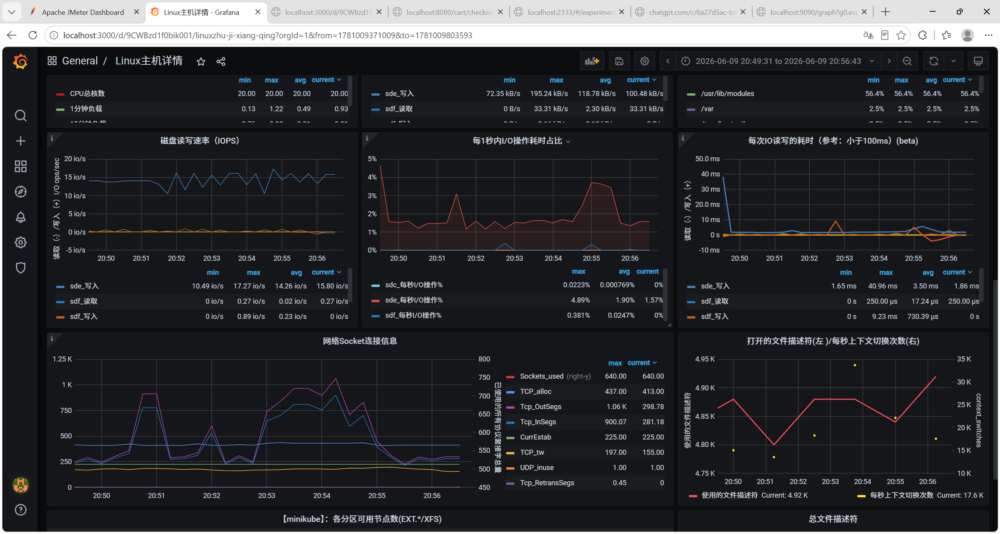
不同负载场景测试
Load进行初步测试后，再次多轮测试来模拟不同的场景。
场景 1：基线测试
用于确认系统正常，无明显错误。
threads = 5
ramp_up = 10
duration = 120场景 2：普通负载
模拟少量真实用户持续访问。
threads = 20
ramp_up = 20
duration = 180场景 3：中等并发
观察系统在较明显并发下的响应时间变化。
threads = 50
ramp_up = 30
duration = 300场景 4：突增流量测试
模拟用户突然涌入。
threads = 100
ramp_up = 5
duration = 180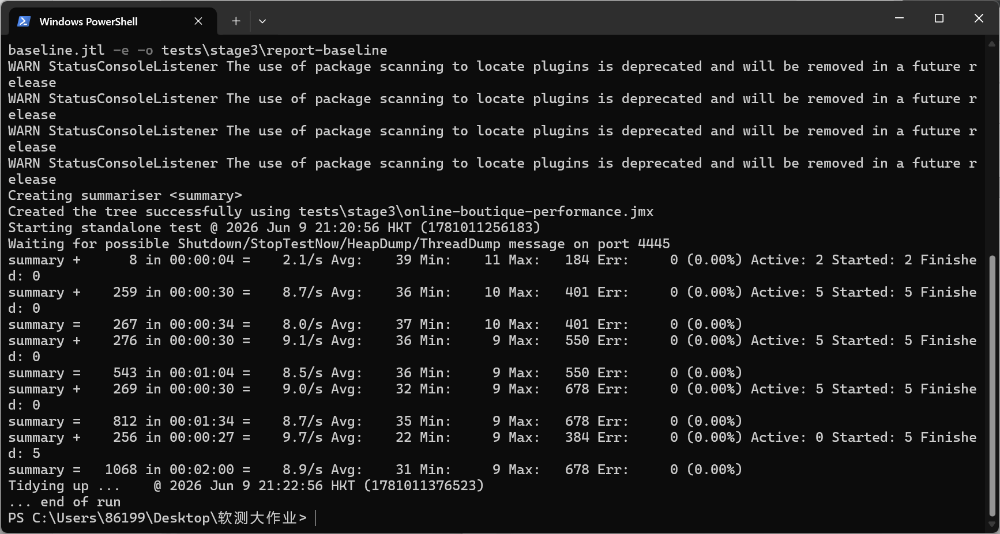
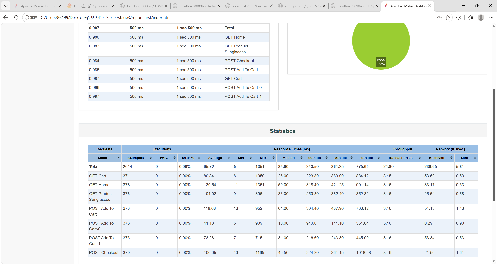
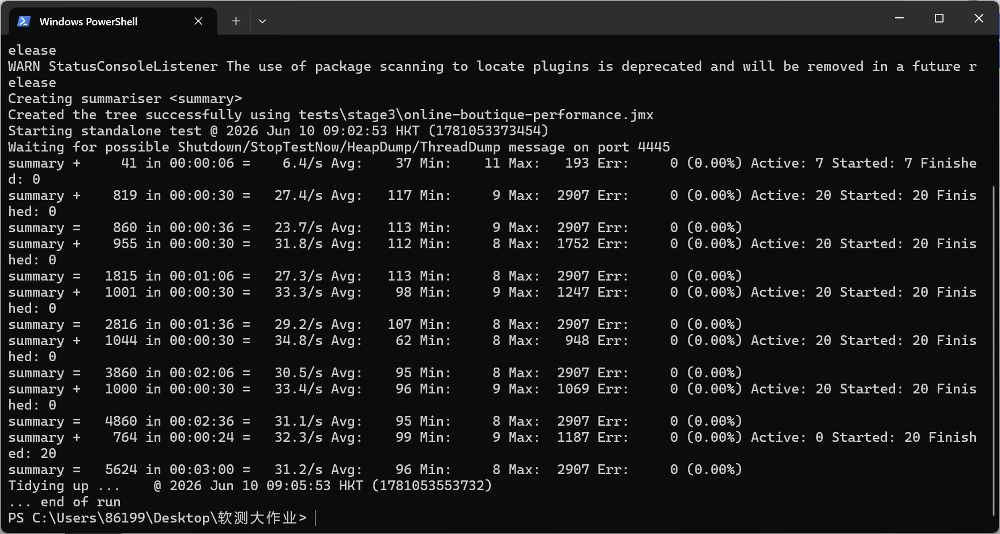
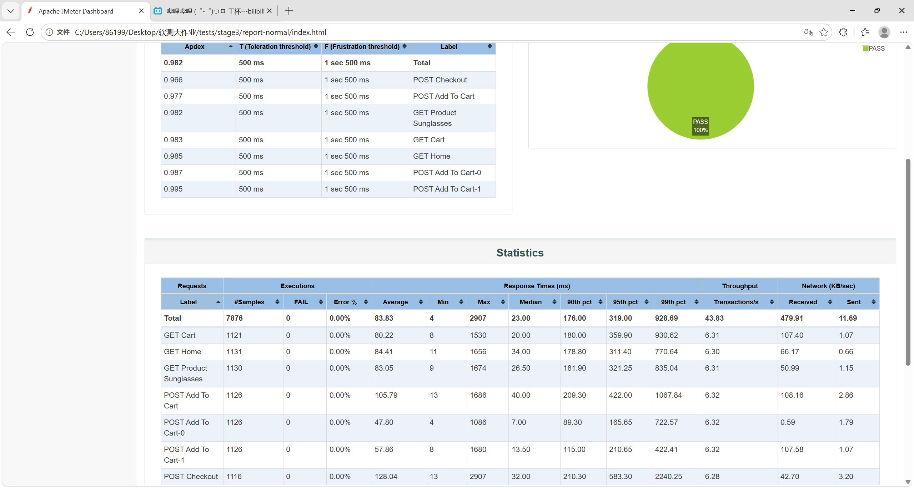
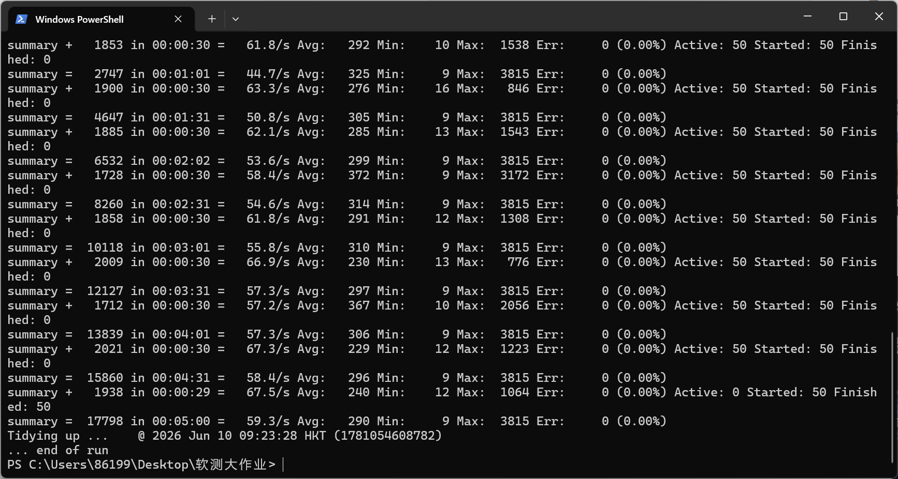
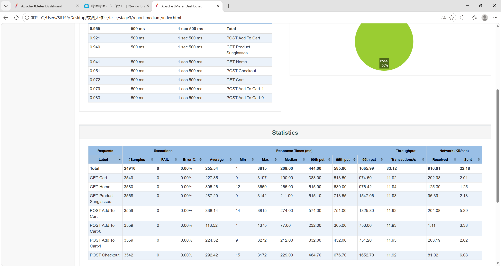
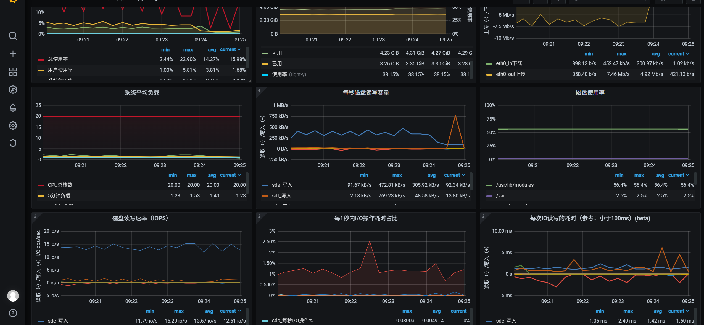
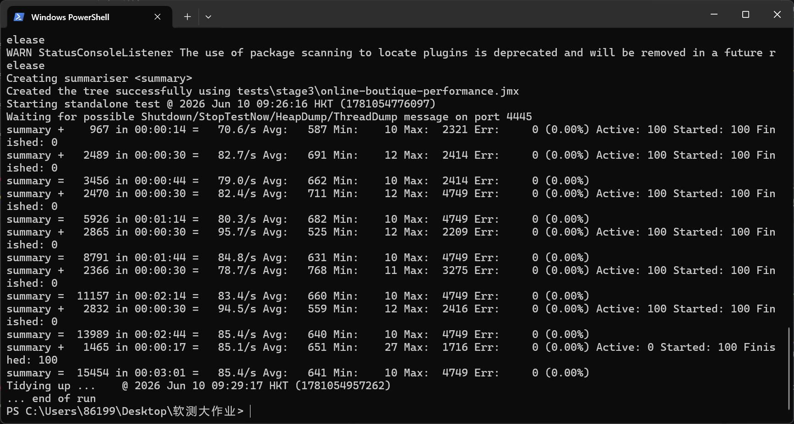
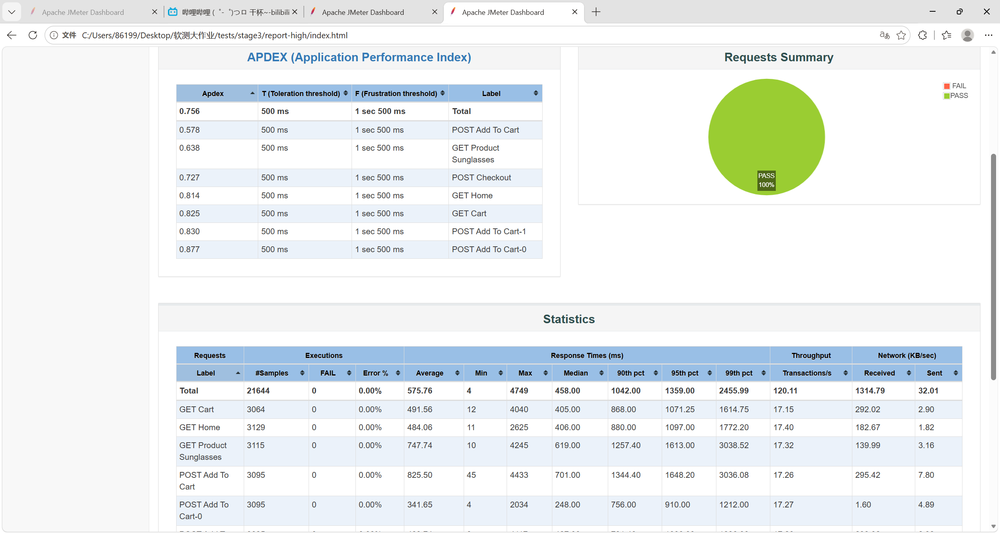
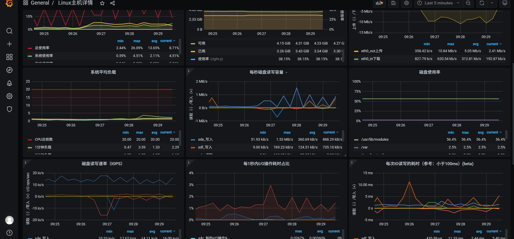